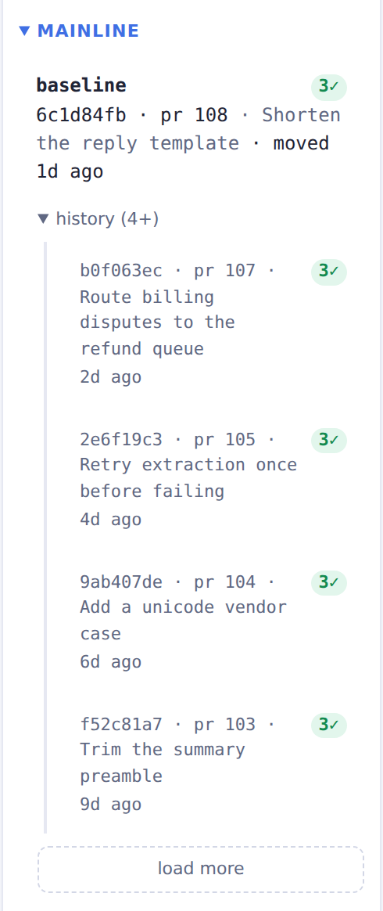
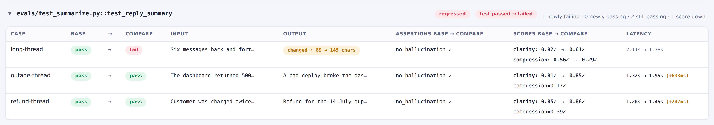

CI/CD¶
Your evals are pytest tests, so the CI you already have runs them. This is how to wire the evaltrack
CLI into it. Every pull request records a run and pushes it to a shared repository, and a merge
promotes that run to baseline. The examples use an azure:// remote, but not a
concrete CI system. The commands are the same wherever you run them. Promote-on-merge is a
convention here, not a rule of the tool. If a merge is not the moment code ships in your process
(for example if you use GitOps), see Adapting the flow.
The flow¶
flowchart TB
subgraph dev["Developer machine"]
write["Write evals<br/>@pytest.mark.evaltrack"]
review["evaltrack ui<br/>reads the remote"]
end
subgraph ci["CI"]
prjob["pull_request:<br/>pytest -m evaltrack<br/>evaltrack push --ref pr/N"]
promotejob["on merge:<br/>evaltrack promote pr/N --cleanup"]
end
subgraph remote["azure:// remote repository"]
prref["pr/N"]
baseline["baseline<br/>(deploy history)"]
end
write -->|open PR| prjob
prjob -->|record run| prref
prref -->|PR merged| promotejob
promotejob -->|append reflog entry| baseline
review -.->|diff pr/N vs baseline| remotePrerequisites¶
You need a shared remote and credentials for it. The examples use azure://, and an s3:// remote
works the same way with the AWS credentials in place of the Azure ones:
- For the URL shape and how evaltrack authenticates, see Repositories › Azure Blob Storage or Repositories › Amazon S3.
- Point
[tool.evaltrack].remoteat the remote, soevaltrack uimounts it next to your local runs:
[tool.evaltrack]
local = "./.evaltrack"
remote = "azure://account/evals"
- Put
AZURE_CLIENT_ID,AZURE_TENANT_IDandAZURE_CLIENT_SECRETin your CI's secret store, whereDefaultAzureCredentialreads them, along with whatever the evals themselves need (anOPENAI_API_KEY, say).
PR pipeline¶
Run the evals, write a run file, and push it under pr/{n}:
export EVALTRACK_COMMIT="$COMMIT_SHA" # (1)!
export EVALTRACK_BRANCH="$BRANCH_NAME"
pytest -m evaltrack --evaltrack-run-file run.json
evaltrack push --run-file run.json \
--ref "pr/$PR_NUMBER" \
--pr "$PR_NUMBER" \
--title "$PR_TITLE" \
--commit "$COMMIT_SHA" # (2)!
- The run records these. A CI checkout is usually a shallow clone on a detached HEAD, so the git context evaltrack would read is not the one you want.
--commitrecords the same SHA on the ref's reflog entry, next to the PR.
That is the whole integration. What the job around it has to get right:
- Install
evaltrack[azure], orevaltrack[s3], alongside your project's own dependencies, or the push fails. - Name the remote once. Set
EVALTRACK_REMOTEfor the job and neither command needs to name a repository (see Configuration › Precedence rules). - Push even when an eval failed. The run is written when the pytest session finishes, whatever the verdicts, so guard the push on the file existing rather than on the test step passing. The run you most need in the dashboard is the one that caught a regression.
- Do not run the eval step under pytest-xdist (
-n). evaltrack does not support it and fails every marked test. - Override the git context, as above, or the run records no commit. See Configuration › Environment variables.
--pr and --title record the PR number and title on the ref, so the dashboard shows which PR a
ref represents. With pr_url_template set, it links the number to the PR.
Promote pipeline¶
When the PR merges, point baseline at its run:
evaltrack promote "pr/$PR_NUMBER" --commit "$MERGE_COMMIT_SHA" --cleanup
--cleanupdeletes the mergedpr/{n}ref and the runs in its history that no other ref reaches, so the PR stops showing as open in the dashboard.- Run one job at a time per PR, and one promote at a time. Both write refs, and
--cleanupworks out what to delete before deleting it. A concurrent writer can leavepr/{n}on an older commit's run, or lose a run it had just referenced.
A promote onto the run baseline already points at records nothing, so a retried job is safe. See
Moving a ref is idempotent.
The baseline reflog reads as a timeline of promoted runs:

Adapting the flow to your delivery process¶
baseline is the run you compare against. promote is a plain CLI call, so run it at whatever
event means shipped in your process. I promote on merge, which suits trunk-based development.
Promoting later than merge leaves pr/{n} refs standing until their run ships, and a ref reaches
every run in its history. Delete them once their PR is closed.
A repository has one baseline. The dashboard's Mainline section and the cross-run reliability
estimate read it.
Reviewing a PR¶
The PR's run is in the shared remote, so a reviewer can see its evals without checking the branch
out. evaltrack ui lists each PR run under Pull requests. Pick one as the compare run against
baseline to see which cases changed.

Flaky evals in CI¶
Give nondeterministic evals a flake_reruns budget on the marker. A flaky case then does not fail
the PR. See Flakiness & reliability.
Prefer flake_reruns over a rerun of a red CI job. A job rerun discards the failed attempts and
biases the tracked pass-rate upward.
Related: CLI · Repositories and storage · Flakiness & reliability